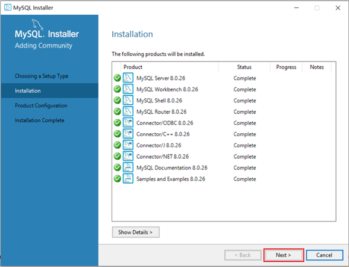
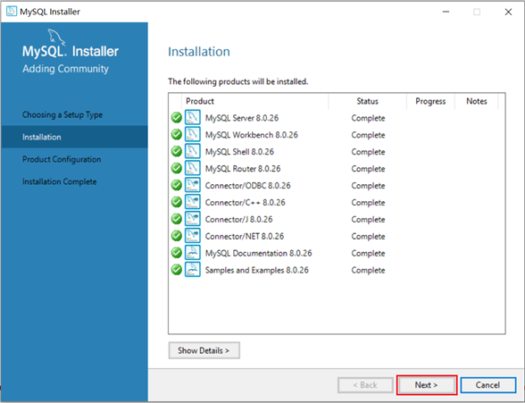

MySQL Windows系统下安装
1、Windows安装包官网下载地址
2、双击msi安装包，依次下一步安装
3、根据安装提示安装


 
 

4、输入MySQL中root用户的密码,一定记得记住该密码


MySQL Linux系统下安装
1、Linux安装包官网下载地址

2、上传至服务器


3、创建文件夹、解压安装包
mkdir mysql
tar -xvf mysql-8.0.31-1.el7.x86_64.rpm-bundle.tar -C mysql4、安装MySQL RPM包
yum install openssl-devel
cd mysql
rpm -ivh mysql-community-common-8.0.26-1.el7.x86_64.rpm
rpm -ivh mysql-community-client-plugins-8.0.26-1.el7.x86_64.rpm
rpm -ivh mysql-community-libs-8.0.26-1.el7.x86_64.rpm
rpm -ivh mysql-community-libs-compat-8.0.26-1.el7.x86_64.rpm
rpm -ivh mysql-community-devel-8.0.26-1.el7.x86_64.rpm
rpm -ivh mysql-community-client-8.0.26-1.el7.x86_64.rpm
rpm -ivh mysql-community-server-8.0.26-1.el7.x86_64.rpm5、启动MySQL服务并设置开机自启
systemctl enable --now mariadb.service6、查询自动生成的root用户密码
grep 'temporary password' /var/log/mysqld.logMySQL登录命令
mysql -u root -p然后输入上述查询到的自动生成的密码，完成登录。
7、修改root用户密码
登录到MySQL之后，需要将自动生成的不便记忆的密码修改了，修改成自己熟悉的便于记忆的密码。
ALTER USER 'root'@'localhost' IDENTIFIED BY '1234';执行上述的SQL会报错，原因是因为设置的密码太简单，密码复杂度不够。我们可以设置密码的复杂度为简单类型，密码长度为4。
set global validate_password.policy = 0;
set global validate_password.length = 4;降低密码的校验规则之后，再次执行上述修改密码的指令。
8、创建用户
默认的root用户只能当前节点localhost访问，是无法远程访问的，我们还需要创建一个root账户，用户远程访问
create user 'root'@'%' IDENTIFIED WITH mysql_native_password BY '1234';9、并给root用户分配权限
grant all on *.* to 'root'@'%';10、重新连接MySQL
mysql -u root -p然后输入新设置的密码